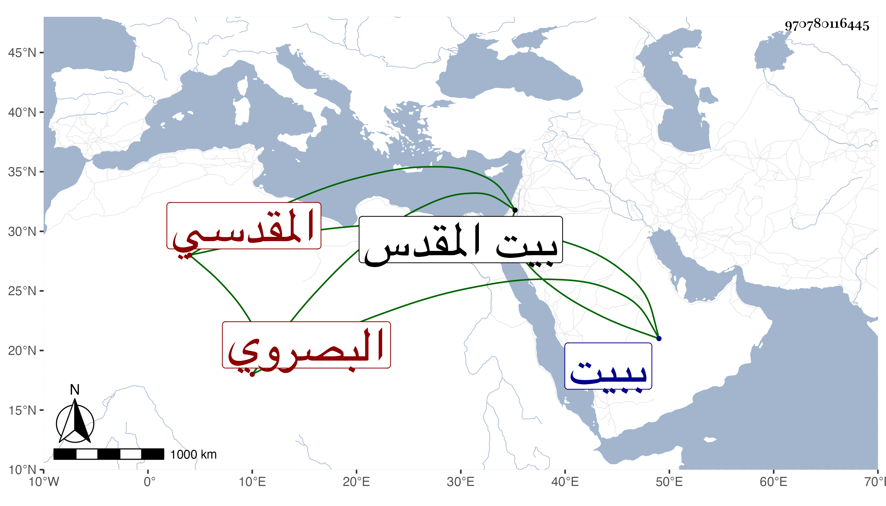

0902Sakhawi.DawLamic.ITO20230111-ara1.EIS1600.970780116445
Biography ID: 970780116445
691
محمد بن عمر بن عيسى بن موسى بن حسن الشمس أبو عبد الله البصروي ثم المقدسي ويعرف بابن القرع بقاف مفتوحة ثم راء ساكنة بعدها مهملة . سمع على الميدومي المسلسل وجزء البطاقة وجزء ابن عرفة وجزء الأنصاري ونسخة إبراهيم بن سعد وغيرها وحدث وذكره شيخنا في معجمه وقال لقيته ببيت المقدس فسمعت منه المسلسل بشرطه وجزء البطاقة وكذا سمع منه التقي أبو بكر القلقشندي المسلسل وجزء ابن عرفة وكان خيرا صالحا محبا في الرواية بحيث يقصد من يسمع منه . مات في يوم الثلاثاء رابع عشري المحرم سنة إحدى عشرة ببيت المقدس رحمه الله .
